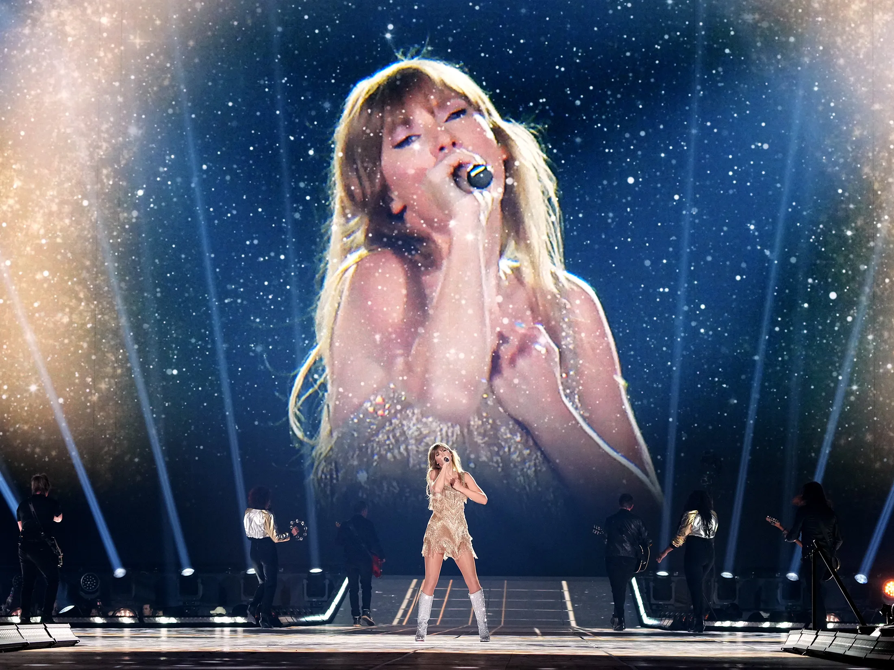

Taylor Alison Swift è nata il 13 dicembre 1989 a Reading, Pennsylvania, negli Stati Uniti. Fin da giovane, ha mostrato un interesse per la musica country e ha iniziato a scrivere canzoni all'età di dieci anni. A 14 anni, si è trasferita a Nashville, Tennessee, per perseguire una carriera musicale. Nel 2006, all'età di 16 anni, ha pubblicato il suo album di debutto eponimo, "Taylor Swift", che ha ricevuto recensioni positive e ha segnato l'inizio del suo successo commerciale. Nel corso degli anni successivi, ha continuato a pubblicare album di successo, spostandosi gradualmente verso la pop music senza abbandonare del tutto le sue radici country. Swift ha guadagnato una reputazione per le sue abilità di scrittura delle canzoni e la sua capacità di raccontare storie personali attraverso la musica. Ha affrontato vari argomenti nelle sue canzoni, tra cui amore, relazioni, crescita personale e empowerment femminile. Oltre alla sua carriera musicale, Taylor Swift è diventata una figura di spicco nell'industria dell'intrattenimento. Ha vinto numerosi premi, tra cui Grammys, Billboard Music Awards e MTV Video Music Awards. È anche stata attiva nel cinema, apparendo in film come "Valentine's Day" e "The Giver". Al di là della sua carriera artistica, Swift è stata coinvolta in varie controversie e ha utilizzato la sua piattaforma per sostenere cause sociali e politiche che ritiene importanti. Ha anche difeso i diritti degli artisti nella sua battaglia contro le grandi case discografiche per il controllo della sua musica.
Taylor Swift ha pubblicato diversi album di successo, molti dei quali hanno debuttato al numero uno nelle classifiche di vendita. Tra questi ci sono "Fearless", "Speak Now", "Red", "1989", "Reputation" e "Lover".  La cantante, infatti, ha vinto numerosi premi, tra cui Grammys, Billboard Music Awards, MTV Video Music Awards e American Music Awards. È stata anche inserita nella Songwriters Hall of Fame e ha ricevuto premi per la sua influenza e il suo contributo all'industria musicale. Di Taylor si ricordano i tour mondiali di successo che hanno attratto milioni di fan in tutto il mondo. Questi tour includono "Fearless Tour", "Speak Now World Tour", "Red Tour", "The 1989 World Tour", "Reputation Stadium Tour" e "Lover Fest".
0 Singoli di Taylor
Taylor Swift ha avuto varie case discografiche nel corso della sua carriera. Inizialmente, ha firmato con Big Machine Records nel 2006, dove ha pubblicato i suoi primi sei album in studio. Tuttavia, nel 2019, Taylor Swift ha firmato un nuovo contratto con Republic Records e Universal Music Group, terminando la sua collaborazione con Big Machine Records. Attualmente, è sotto contratto con Republic Records e Universal Music Group.